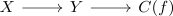
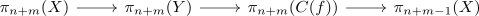
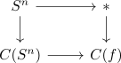
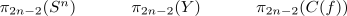

long exact sequence of homotopy groups for a homotopy cofibration sequence in general does not extend
Proposition
Let

be the homotopy cofibration sequence and

the long exact sequence of homotopy groups for a homotopy cofibration sequence
Then this does not extend in general
Proof
Consider $S^n \rightarrow *$. It is \(n-1\)-connected (cf. connected space and connectivity of the terminal morphism, n-sphere as n-1 connected space), as well as $X$ Then we get

and the sequence

Then to extend the sequence one further to the left we would need an isomorphism on
\begin{align*}
\pi_{2n-1}
\end{align*}
This is wrong for $n = 2$ as the map is isomorphic to the projection
\begin{align*}
\mathbb{Z} \rightarrow \mathbb{Z}/(2 \mathbb{Z})
\end{align*}